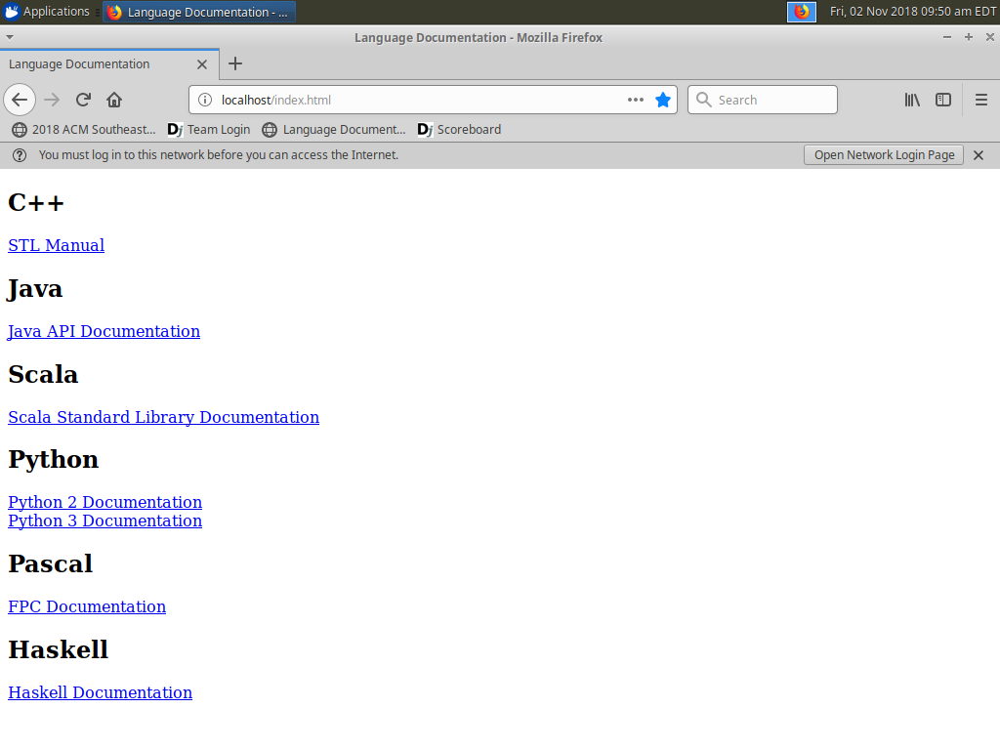
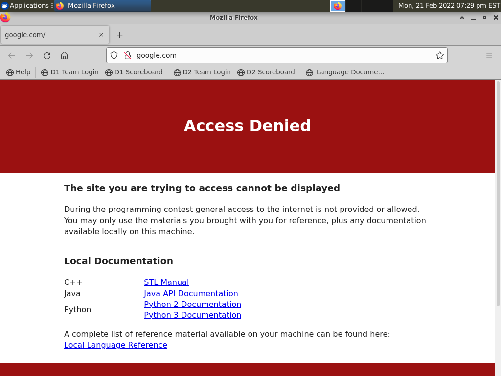
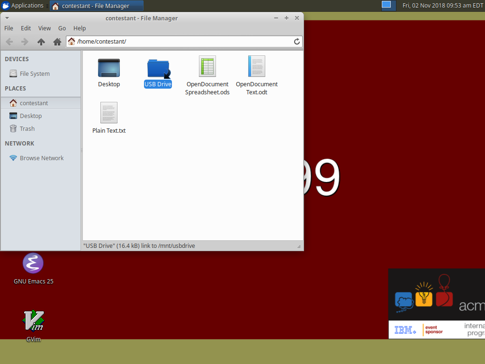

From inside firefox, there is a bookmark toolbar entry for language documentation.

If you try to navigate anywhere other than the few allowed websites, you will received an access denied page.

Inside the team home folder is a directory called "USB Drive". This is a Fat32 formatted partition teams can copy their files to at the end of the contest. If they take the flash drive home with them they should be able to plug it into any Mac/Windows/Linux PC and read the contents.
They can also boot the drive up on their own system, the network firewall is time limited so it will stop blocking traffic about a week after the contest.
